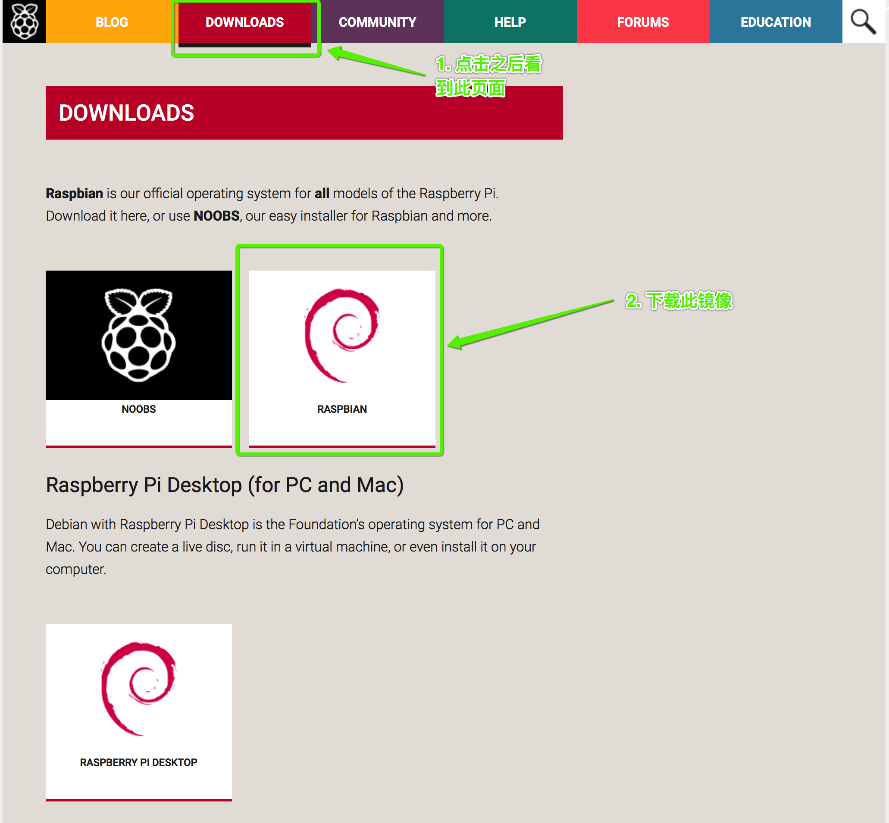
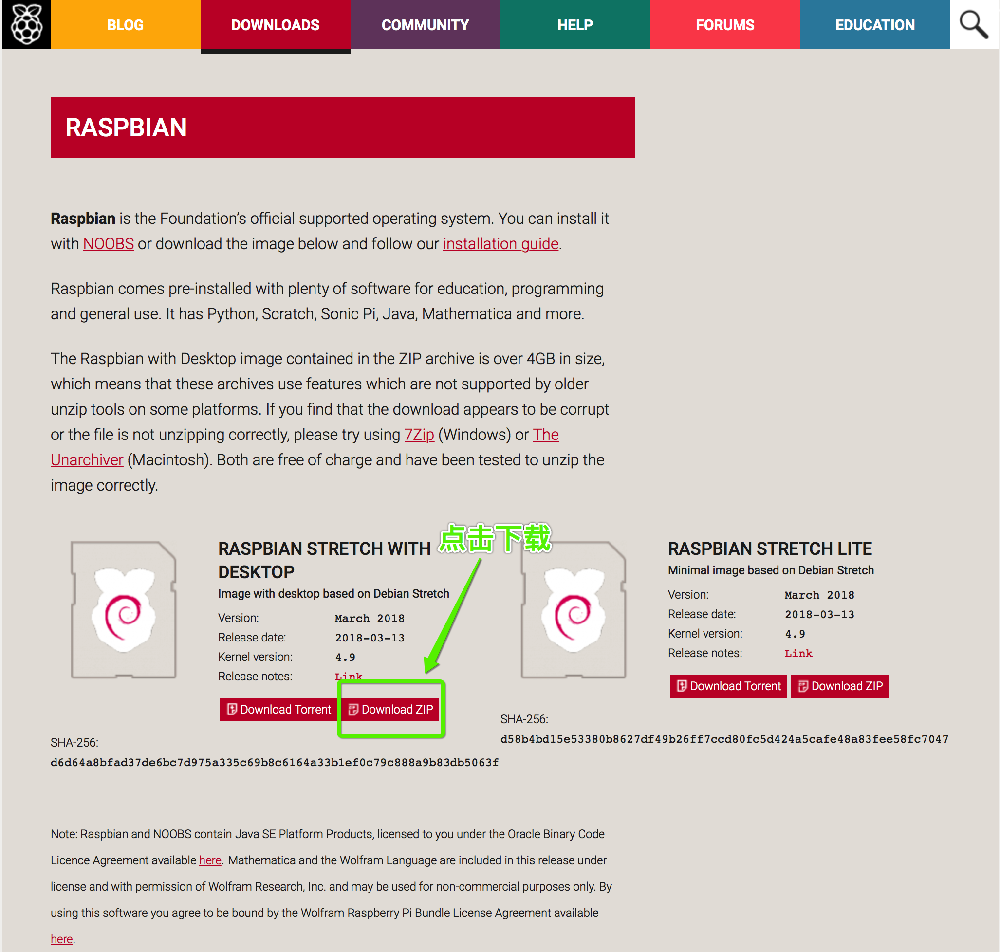
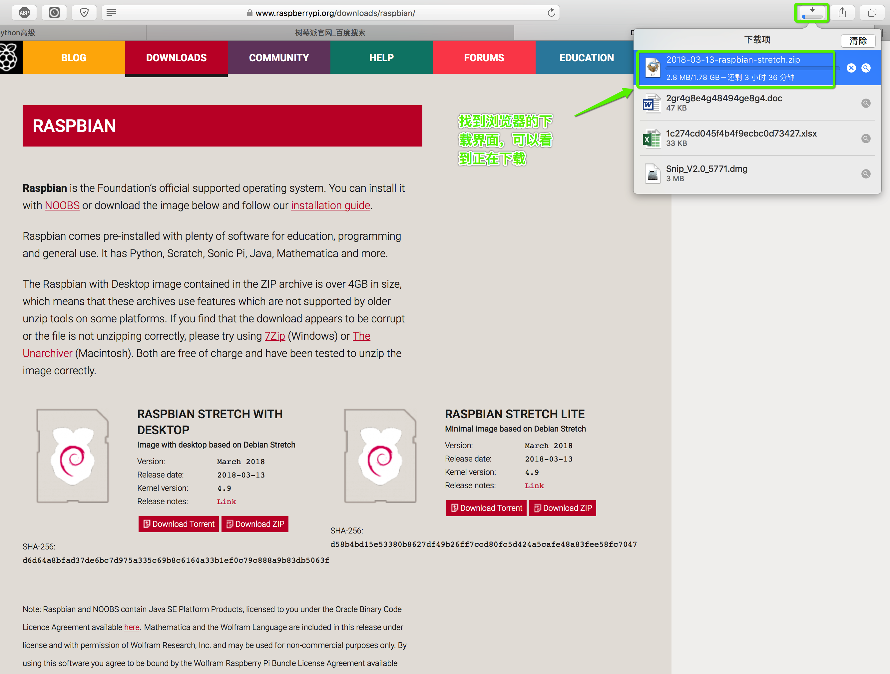
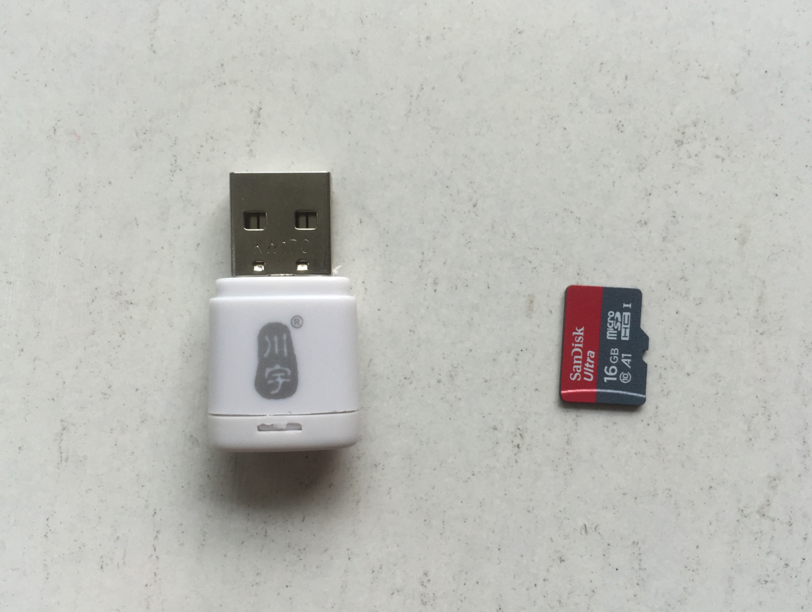
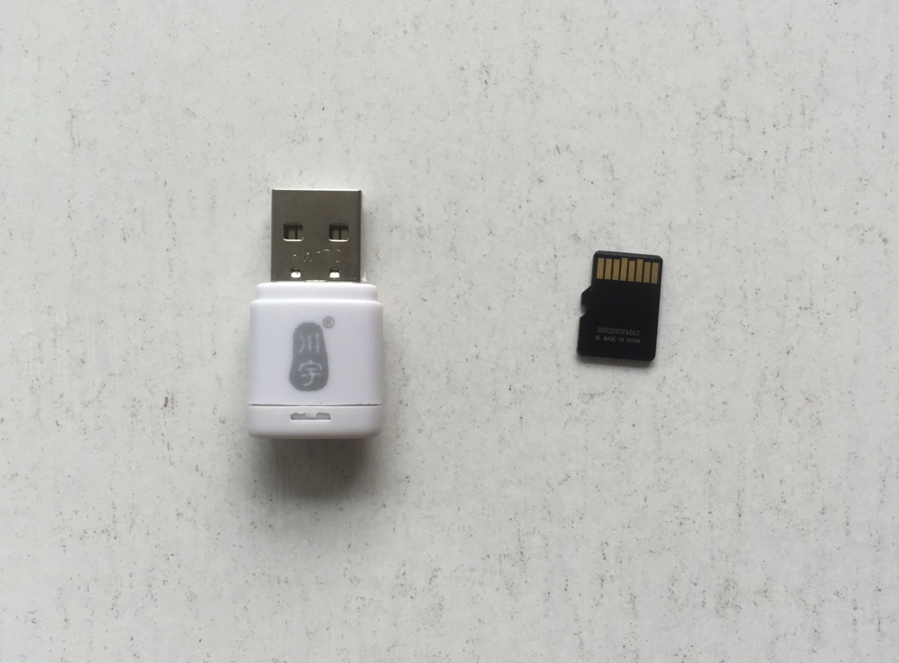
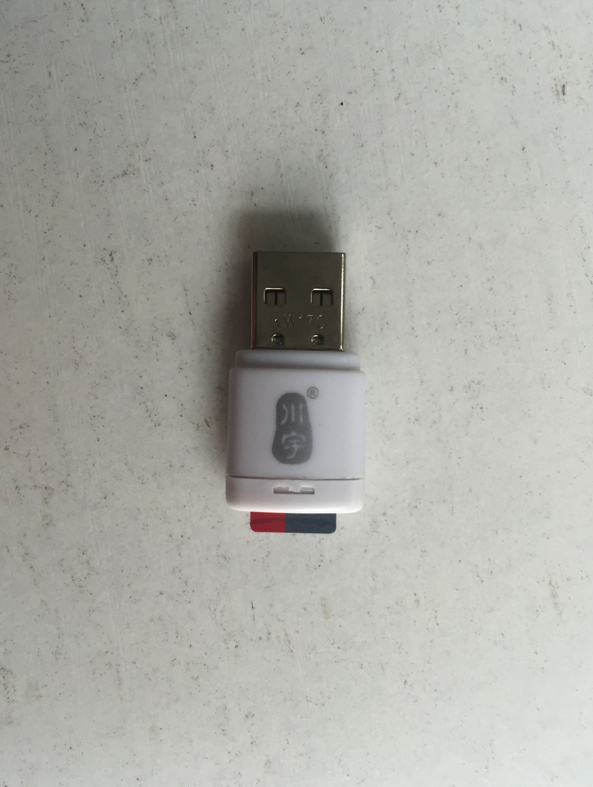
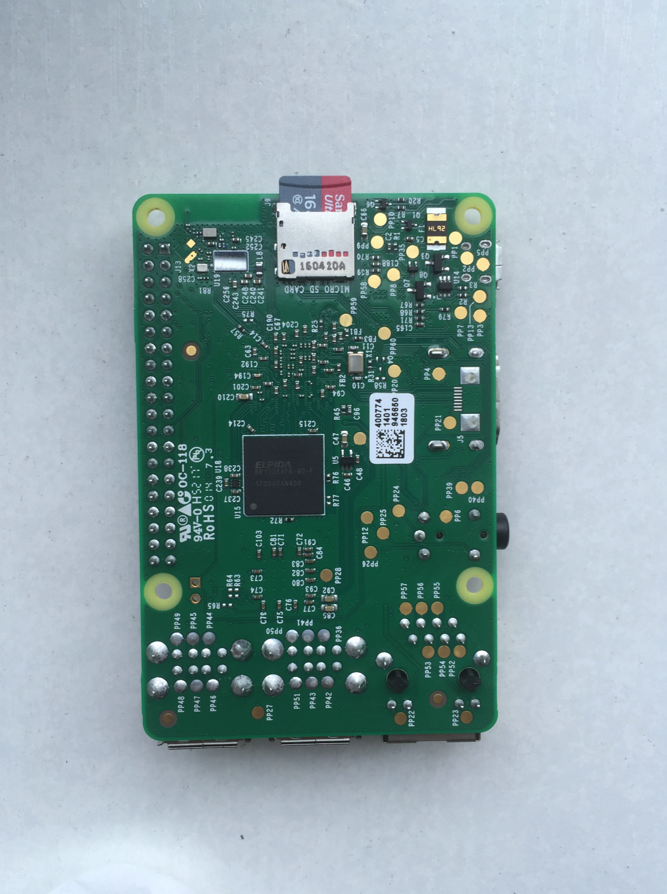

下载树莓派镜像以及烧录到SD卡
1. 下载树莓派镜像
网址：https://www.raspberrypi.org



2. 将镜像烧录到SD卡
注意：烧录的功能类似于光盘的刻录，不能直接复制到SD卡
2.1 命令查看下载的文件
[dongge@mac: pi]$ls -lh
total 3788800
-rw-r--r-- 1 dongge staff 1.8G 2 9 03:44 2013-02-09-wheezy-raspbian.img
2.2 将SD卡插入到读卡器，然后将读卡器插入到电脑



2.3 用df命令查看当前已挂载的卷：
[dongge@mac: pi]$df -h
Filesystem Size Used Avail Capacity Mounted on
/dev/disk0s2 112Gi 96Gi 15Gi 87% /
devfs 183Ki 183Ki 0Bi 100% /dev
map -hosts 0Bi 0Bi 0Bi 100% /net
map auto_home 0Bi 0Bi 0Bi 100% /home
/dev/disk1s1 15Gi 2.3Mi 15Gi 1% /Volumes/未命名
对比Size和Name可以找到SD卡的分区在系统里对应的设备文件（这里是/dev/disk1s1），如果你有多个分区，可能还会有disk1s2之类的。
注意：
- 本系统中使用的SD卡存储空间大小为16G，所以找的时候主要看是否接近16G即可
2.4 使用diskutil unmount将这些分区卸载：
[dongge@mac: pi]$diskutil unmount /dev/disk1s1
Volume 未命名 on disk1s1 unmounted
2.5 通过diskutil list来确认设备：
[dongge@mac: pi]$diskutil list
/dev/disk0
#: TYPE NAME SIZE IDENTIFIER
0: GUID_partition_scheme *121.3 GB disk0
1: EFI 209.7 MB disk0s1
2: Apple_HFS Macintosh HD 120.5 GB disk0s2
3: Apple_Boot Recovery HD 650.0 MB disk0s3
/dev/disk1
#: TYPE NAME SIZE IDENTIFIER
0: FDisk_partition_scheme *15.8 GB disk1
1: Windows_NTFS 未命名 15.8 GB disk1s1
2.6 使用dd命令将系统镜像写入，需要特别特别注意disk后的数字，不能搞错！
跳转到自己下载的树莓派镜像路径
cd 你的树莓派存放路径
查看是否有镜像（下载的镜像不一样，名称可能不一样，但是后缀是img）
[dongge@mac: pi] ls
2017-09-07-raspbian-stretch.img
使用dd开始写入（烧录）到SD卡
千万要注意，下面命令中disk后面的数字，不要搞错，否则你的电脑上存储的资料就没有Ｏ(≧口≦)Ｏ
（说明：/dev/disk1s1是分区，/dev/disk1是块设备，/dev/rdisk1是原始字符设备）
[dongge@mac: pi]$ dd bs=4m if=2017-09-07-raspbian-stretch.img of=/dev/rdisk1
经过几分钟的等待，出现下面的提示，说明SD卡刷好了：
1172+1 records in
1172+1 records out
4916019200 bytes transferred in 365.428195 secs (13452764 bytes/sec)
2.7 用diskutil unmountDisk卸载设备：
[dongge@mac: pi]$diskutil unmountDisk /dev/disk1
Unmount of all volumes on disk1 was successful
2.8 制作完成
现在就可以拔下SD卡，插到树莓派上启动系统了
